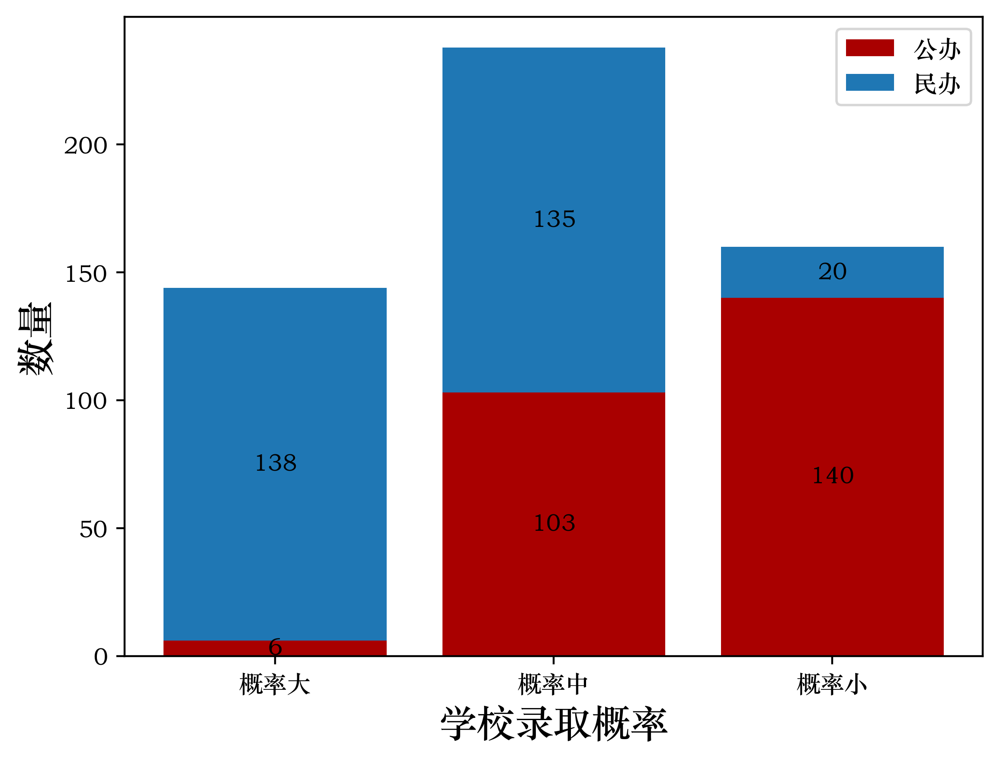

数据来源于网站https://www.gaokao.cn/，也可以在微信小程序上搜索“掌上高考”，由于其功能“模拟报志愿”需要VIP充值，所以从“智能选大学”模块爬取在当前成绩下所有本科院校的学校类型、录取概率和前一年的文科分数线。
“掌上高考”中的学校录取概率取决于最低分数线，如果你的分数超过最低分数线，不一定意味着你能够上这所大学，例如：有学校A，它的最低分数线是472，但实际上这可能是这个学校专科录取的最低分数线，它的本科的最低录取分数线是518；又或者在录取批次上，提前批的最低分数线是472，但本科二批的最低分数线是512。总之，对于学校的招生分数，还要查看学校具体招生计划才能判断是否达到分数线。可以通过微信登录“掌上高考”查看学校具体信息。
从“掌上高考”上爬取数据后，发现对于成绩478，历政地，江西来说，学校录取概率分为概率大、概率中，概率小三个级别，如下图所示。显示录取概率大的本科院校有144所，其中6所是公办，138所是民办。

录取概率大且是公办的学校一共6所，具体招生计划请前往“掌上高考”搜索查看
| 学校 | 城市 | 关键词 | 本科批次 | 学校类别 | 2023年录取分数线 |
|---|---|---|---|---|---|
| 山西传媒学院 | 山西晋中市 | 本科艺术类公办 | 本科二批 | 普通类 | 最低分/最低位次：487/40761 |
| 海南热带海洋学院 | 海南三亚市 | 本科综合类公办 | 本科二批 | 中外合作办学 | 最低分/最低位次：481/45141 |
| 长春师范大学 | 吉林长春市 | 本科师范类公办 | 本科二批 | 中外合作办学 | 最低分/最低位次：476/49010 |
| 北华航天工业学院 | 河北廊坊市 | 本科理工类公办 | 本科二批 | 普通类 | 最低分/最低位次：472/51972 |
| 南京警察学院 | 江苏南京市 | 本科政法类公办 | 本科提前批 | 普通类 | 最低分/最低位次：472/51972 |
| 郑州警察学院 | 河南郑州市 | 本科政法类公办 | 国家专项计划本科批 | 普通类 | 最低分/最低位次：472/51972 |
位于江西且录取概率大的学校都是民办，没有公办，一共9所学校
| 学校 | 城市 | 关键词 | 本科批次 | 学校类别 | 2023年录取分数线 |
|---|---|---|---|---|---|
| 南昌理工学院 | 江西南昌市 | 本科综合类民办 | 本科二批 | 普通类 | 最低分/最低位次：488/40081 |
| 江西工程学院 | 江西新余市 | 本科理工类民办 | 本科二批 | 普通类 | 最低分/最低位次：485/41904 |
| 江西科技学院 | 江西南昌市 | 本科综合类民办 | 本科二批 | 普通类 | 最低分/最低位次：481/45405 |
| 南昌工学院 | 江西南昌市 | 本科理工类民办 | 本科二批 | 普通类 | 最低分/最低位次：480/45771 |
| 南昌理工学院 | 江西南昌市 | 本科综合类民办 | 本科二批 | 中外合作办学 | 最低分/最低位次：478/47547 |
| 景德镇艺术职业大学 | 江西景德镇市 | 本科艺术类民办 | 本科二批 | 普通类 | 最低分/最低位次：478/47637 |
| 江西应用科技学院 | 江西南昌市 | 本科综合类民办 | 本科二批 | 普通类 | 最低分/最低位次：475/49115 |
| 江西服装学院 | 江西南昌市 | 本科艺术类民办 | 本科二批 | 普通类 | 最低分/最低位次：472/51972 |
| 江西软件职业技术大学 | 江西南昌市 | 本科理工类民办 | 本科二批 | 普通类 | 最低分/最低位次：472/51972 |
以下是分数线小于或等于478分的学校，一共56所学校。
| 学校 | 城市 | 关键词 | 本科批次 | 学校类别 |
|---|---|---|---|---|
| 南昌职业大学 | 江西南昌市 | 本科综合类民办 | 本科二批 | 普通类 |
| 南昌理工学院 | 江西南昌市 | 本科综合类民办 | 本科二批 | 中外合作办学 |
| 大连医科大学中山学院 | 辽宁大连市 | 本科医药类民办 | 本科二批 | 普通类 |
| 河北外国语学院 | 河北石家庄市 | 本科语言类民办 | 本科二批 | 普通类 |
| 广东科技学院 | 广东东莞市 | 本科综合类民办 | 本科二批 | 普通类 |
| 长春电子科技学院 | 吉林长春市 | 本科理工类民办 | 本科二批 | 普通类 |
| 沈阳城市学院 | 辽宁沈阳市 | 本科综合类民办 | 本科二批 | 普通类 |
| 桂林信息科技学院 | 广西桂林市 | 本科理工类民办 | 本科二批 | 普通类 |
| 景德镇艺术职业大学 | 江西景德镇市 | 本科艺术类民办 | 本科二批 | 普通类 |
| 福州理工学院 | 福建福州市 | 本科理工类民办 | 本科二批 | 普通类 |
| 南通理工学院 | 江苏南通市 | 本科综合类民办 | 本科二批 | 普通类 |
| 广州工商学院 | 广东广州市 | 本科财经类民办 | 本科二批 | 普通类 |
| 黑龙江东方学院 | 黑龙江哈尔滨市 | 本科综合类民办 | 本科二批 | 普通类 |
| 广东理工学院 | 广东肇庆市 | 本科理工类民办 | 本科二批 | 普通类 |
| 上海立达学院 | 上海市松江区 | 本科财经类民办 | 本科二批 | 普通类 |
| 西安信息职业大学 | 陕西西安市 | 本科理工类民办 | 本科二批 | 普通类 |
| 陕西服装工程学院 | 陕西咸阳市 | 本科综合类民办 | 本科二批 | 普通类 |
| 长春师范大学 | 吉林长春市 | 本科师范类公办 | 本科二批 | 中外合作办学 |
| 广东工商职业技术大学 | 广东肇庆市 | 本科综合类民办 | 本科二批 | 普通类 |
| 长春科技学院 | 吉林长春市 | 本科综合类民办 | 本科二批 | 普通类 |
| 长春建筑学院 | 吉林长春市 | 本科理工类民办 | 本科二批 | 普通类 |
| 沈阳城市建设学院 | 辽宁沈阳市 | 本科理工类民办 | 本科二批 | 普通类 |
| 辽宁财贸学院 | 辽宁葫芦岛市 | 本科财经类民办 | 本科二批 | 普通类 |
| 广州科技职业技术大学 | 广东广州市 | 本科综合类民办 | 本科二批 | 普通类 |
| 大连工业大学艺术与信息工程学院 | 辽宁大连市 | 本科理工类民办 | 本科二批 | 普通类 |
| 江西应用科技学院 | 江西南昌市 | 本科综合类民办 | 本科二批 | 普通类 |
| 哈尔滨石油学院 | 黑龙江哈尔滨市 | 本科理工类民办 | 本科二批 | 普通类 |
| 浙江广厦建设职业技术大学 | 浙江金华市 | 本科理工类民办 | 本科二批 | 普通类 |
| 上海外国语大学贤达经济人文学院 | 上海市崇明区 | 本科财经类民办 | 本科二批 | 普通类 |
| 天津天狮学院 | 天津市武清区 | 本科综合类民办 | 本科二批 | 普通类 |
| 黑龙江外国语学院 | 黑龙江哈尔滨市 | 本科语言类民办 | 本科二批 | 普通类 |
| 长春工业大学人文信息学院 | 吉林长春市 | 本科综合类民办 | 本科二批 | 普通类 |
| 西安汽车职业大学 | 陕西西安市 | 本科理工类民办 | 本科二批 | 普通类 |
| 大连东软信息学院 | 辽宁大连市 | 本科理工类民办 | 本科二批 | 普通类 |
| 吉林建筑科技学院 | 吉林长春市 | 本科理工类民办 | 本科二批 | 普通类 |
| 哈尔滨信息工程学院 | 黑龙江哈尔滨市 | 本科理工类民办 | 本科二批 | 普通类 |
| 长春大学旅游学院 | 吉林长春市 | 本科综合类民办 | 本科二批 | 普通类 |
| 辽宁理工职业大学 | 辽宁锦州市 | 本科理工类民办 | 本科二批 | 普通类 |
| 海口经济学院 | 海南海口市 | 本科综合类民办 | 本科二批 | 普通类 |
| 北华航天工业学院 | 河北廊坊市 | 本科理工类公办 | 本科二批 | 普通类 |
| 南京警察学院 | 江苏南京市 | 本科政法类公办 | 本科提前批 | 普通类 |
| 郑州警察学院 | 河南郑州市 | 本科政法类公办 | 国家专项计划本科批 | 普通类 |
| 三亚学院 | 海南三亚市 | 本科综合类民办 | 本科二批 | 普通类 |
| 三江学院 | 江苏南京市 | 本科综合类民办 | 本科二批 | 普通类 |
| 辽宁对外经贸学院 | 辽宁大连市 | 本科财经类民办 | 本科二批 | 普通类 |
| 吉林外国语大学 | 吉林长春市 | 本科语言类民办 | 本科二批 | 中外合作办学 |
| 哈尔滨华德学院 | 黑龙江哈尔滨市 | 本科理工类民办 | 本科二批 | 普通类 |
| 吉林师范大学博达学院 | 吉林四平市 | 本科师范类民办 | 本科二批 | 普通类 |
| 黑龙江工商学院 | 黑龙江哈尔滨市 | 本科综合类民办 | 本科二批 | 普通类 |
| 上海中侨职业技术大学 | 上海市金山区 | 本科财经类民办 | 本科二批 | 普通类 |
| 哈尔滨剑桥学院 | 黑龙江哈尔滨市 | 本科综合类民办 | 本科二批 | 普通类 |
| 江西服装学院 | 江西南昌市 | 本科艺术类民办 | 本科二批 | 普通类 |
| 齐齐哈尔工程学院 | 黑龙江齐齐哈尔市 | 本科综合类民办 | 本科二批 | 普通类 |
| 黑龙江工程学院昆仑旅游学院 | 黑龙江哈尔滨市 | 本科理工类民办 | 本科二批 | 普通类 |
| 上海兴伟学院 | 上海市浦东新区 | 本科综合类民办 | 本科二批 | 普通类 |
| 江西软件职业技术大学 | 江西南昌市 | 本科理工类民办 | 本科二批 | 普通类 |
本次分析数据来源于“掌上高考”，信息仅供参考，具体数据请以学校官网或考试院公布为准。